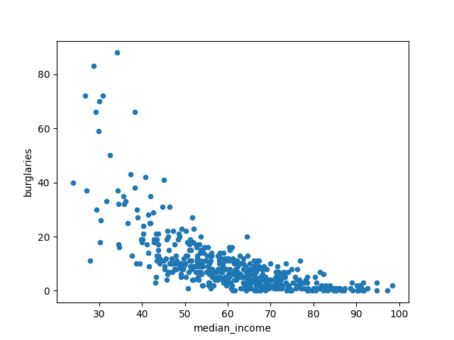

Sayım, Poisson ve Negatif Binom Bazlı Genel Lineer Modelleri (GLM)
Sayım (count) verisini modellemek için genellikle Poisson dağılımına başvurulur. Ayrıca ortada bir regresyon problemi var ise, yani belli katsayılar üzerinden çarpılan değişkenlerin sonucu ile bir sayım arasında ilişki kurulmak istenirse -ki bu Logit örneğinde görülmüştü, link fonksiyonu sigmoid yerine Poisson olur- o zaman Poisson GLM kullanılır.
Poisson dağılımını hatırlarsak,
$$ f(x;\lambda) = e^{-\lambda}\frac{\lambda^{x}}{x!} $$
Eğer bir $y_i$ rasgele değişkenini dağılımı $\lambda=\theta_i$ olan Poisson rasgele değişkeni diye tanımlamak istersek, ki bu dağılım alttaki tanıma göre her $i$ için değişik olur,
$$ y_i \sim Poisson(\theta_i) $$
Yoğunluk
$$ f(y_i;\theta_i) = Poisson(y_i;\theta_i) $$
olarak ta gösterilebilir. Şimdi GLM, yani regresyon yapmak için $\theta_i$'yi biraz daha detaylandıralım / içini dolduralım,
$$ \theta_i = \exp(X_i \beta)$$
Poisson dağılımı regresyon kaynağı olacak değişkenlerin lineer kombinasyonu ile parametrize edilecek, $\beta$ regresyonun tahmin edeceği katsayılar olacak. $\theta_i$ ile parametrizasyon sonucu her veri noktası için farklı olabilecek bir $\theta_i$ ortaya çıkabileceğinden bahsettik, fakat bu parametrizasyonların arkasında hep aynı $\beta$ vektörü olacak, bu durumda Poisson GLM'i veriye uydurmak demek veriyi en iyi açıklayan bu aynı $\beta$'yi ortaya çıkartmaktır.
$\exp$ alınmış olmasının sebebi ise sadece artı sayılar ile çalışmak istememiz, çünkü $\exp$ alınınca eksi sayılar bile sıfırdan büyük olur,
print np.exp(-2)
print np.exp(1./6)
0.135335283237
1.18136041287
Merak edenler için maksimum olurluk
$$ f(y;\beta,X) = \prod_{i=1}^n Poisson(y_i;e^{X_i\beta} ) $$
Veri
Devam etmeden önce veriye bakıp Poisson varsayımını kontrol etmek iyi olur. Mesela örnek verimiz bir bölgede oturan insanların medyan kazanç (median income) ile bu kazanca sahip olan şahısların evlerine ne kadar hırsız girdiği arasındaki ilişki. Medyan kazanç için kaç eve hırsız girdiği bir sayım verisi, ilk akla gelen Poisson ile modellenmesi, bakalım,
import pandas as pd
burg = pd.read_csv('burglary.txt',sep=' ')
burg.plot(y='burglaries',x='median_income',kind='scatter')
plt.savefig('stat_count_01.png')

Grafik Poisson'a benziyor.. Diğer yandan aslında negatif binom dağılımına da benziyor. Şimdilik Poisson varsayımı ile devam edelim. Bu dağılımın önemli bir varsayımı ortalamasının varyansı ile aynı olmasıdır. Veride durum böyle midir?
Medyan kazancı 59 ile 61 arasında olan kişilere bakalım,
burg_59_61 = burg[(burg['median_income'] > 59) & (burg['median_income'] < 61)]
m = burg_59_61['burglaries'].mean()
v = burg_59_61['burglaries'].std()**2
print m, v, v/m
7.33333333333 22.5384615385 3.07342657343
Veriden örneklem ortalaması ve örneklem varyansını hesapladık. Ne yazık ki varyans ortalamanın üç katı! Demek ki bu verinin dağılımının Poisson olma olasılığı düşük. Verinin başka bir bölgesine bakarsak,
burg_59_61 = burg[(burg['median_income'] > 39) & (burg['median_income'] < 41)]
m = burg_59_61['burglaries'].mean()
v = burg_59_61['burglaries'].std()**2
print m, v, v/m
21.8571428571 97.1428571429 4.44444444444
Aradaki fark bu sefer daha da büyük. Eğer bu veriye Poisson bazlı bir GLM uydurmaya kalksaydık, ortaya aşırı saçılmış (överdispersed) bir durum ortaya çıkardı. Ya da terminoloji olarak ve Poisson bazlı düşünürsek bu verinin aşırı saçılmış olduğu söylenecekti. Her iki yöntemi de deneyebiliriz, önce Poisson bazlı sonra Negatif Binomial bazlı bir GLM. İkincisinin daha iyi sonuç verdiğini daha düşük kalıntı sapma (residual deviance) değerinden anlayabiliriz.
import pandas as pd
import statsmodels.formula.api as smf
import statsmodels.api as sm
model=smf.glm("burglaries ~ median_income", data=burg,
family=sm.families.Poisson()).fit()
print(model.summary())
model=smf.glm("burglaries ~ median_income", data=burg,
family=sm.families.NegativeBinomial()).fit()
print(model.summary())
Generalized Linear Model Regression Results
==============================================================================
Dep. Variable: burglaries No. Observations: 500
Model: GLM Df Residuals: 498
Model Family: Poisson Df Model: 1
Link Function: log Scale: 1.0
Method: IRLS Log-Likelihood: -1596.2
Date: Mon, 09 Mar 2015 Deviance: 1452.6
Time: 16:10:11 Pearson chi2: 1.47e+03
No. Iterations: 8
=================================================================================
coef std err z P>|z| [95.0% Conf. Int.]
---------------------------------------------------------------------------------
Intercept 5.6124 0.056 100.228 0.000 5.503 5.722
median_income -0.0613 0.001 -56.191 0.000 -0.063 -0.059
=================================================================================
Generalized Linear Model Regression Results
==============================================================================
Dep. Variable: burglaries No. Observations: 500
Model: GLM Df Residuals: 498
Model Family: NegativeBinomial Df Model: 1
Link Function: log Scale: 0.354315963879
Method: IRLS Log-Likelihood: -1482.4
Date: Mon, 09 Mar 2015 Deviance: 208.25
Time: 16:10:12 Pearson chi2: 176.
No. Iterations: 7
=================================================================================
coef std err z P>|z| [95.0% Conf. Int.]
---------------------------------------------------------------------------------
Intercept 5.5857 0.133 42.103 0.000 5.326 5.846
median_income -0.0608 0.002 -27.925 0.000 -0.065 -0.057
=================================================================================
Titanik Verisi
Daha ilginç bir veri batan Titanik gemisinin kayıtları. Bu kayıtlarda yolcuların sağ kurtulup kurtulmadığı onlar hakkında baz bilgi ile beraber kişi seviyesinde kaydedilmiş. Hangi sınıfta (whichclass) seyahat etmiş, yetişkin mi (adult) çocuk mu, cinsiyeti erkek mi kadın mı (man / woman), hayatta kaldı mı (survived) gibi bilgiler bu kayıtlarda. Bu veriye bakıp istatistiki olarak mesela yolcunun seyahat ettiği sınıfın hayatta kalmaya etki edip etmediği görülebilir. Ham verinin birkaç satırına bakalım,
import pandas as pd
tmp = pd.read_csv("titanic.csv",sep=',',index_col=0)
print tmp.head(5)
class age sex survived
1 1st class adults man yes
2 1st class adults man yes
3 1st class adults man yes
4 1st class adults man yes
5 1st class adults man yes
Tahmin bağlamında verinin 1/0 etiketlerine sahip olmasından hareketle ilk akla gelen ona bir lojistik regresyon ya da Logit modeli uydurmak olabilir. Fakat bu verinin her satırı üzerinden Logit yapmak yerine grup toplamları üzerinden Poisson ya da Negatif Binom yapmak daha uygun olur. Toplamlara bakalım (ayrı bir dosyada),
import pandas as pd
df = pd.read_csv("titanicgrp.csv",sep=',',index_col=0)
print df
survive cases age sex whichclass
1 1 1 0 0 1
2 13 13 0 0 2
3 14 31 0 0 3
4 5 5 0 1 1
5 11 11 0 1 2
6 13 48 0 1 3
7 140 144 1 0 1
8 80 93 1 0 2
9 76 165 1 0 3
10 57 175 1 1 1
11 14 168 1 1 2
12 75 462 1 1 3
Poisson ile ilerlemeden önce, bir soru soralım: niye 1. sınıfta kurtulan çocuk sayısı 2. ve 3. sınıftakinden daha az?
print df[(df['age']==0) & (df['whichclass']==1) ].sum()['survive']
print df[(df['age']==0) & (df['whichclass']==2) ].sum()['survive']
print df[(df['age']==0) & (df['whichclass']==3) ].sum()['survive']
6
24
27
Bu bizi şaşırtıyor, çünkü o sınıftan daha fazla kişinin kurtulmasını bekleriz. Fakat sebep başka, sebep 1. sınıfta seyahat eden toplam çocuk sayısının zaten az olması. Toplamlara bakarsak,
print '1. sinif cocuk sayisi,',
df[(df['age']==0) & (df['whichclass']==1) ].sum()['cases']
print '2. sinif cocuk sayisi,',
df[(df['age']==0) & (df['whichclass']==2) ].sum()['cases']
print '3. sinif cocuk sayisi,',
df[(df['age']==0) & (df['whichclass']==3) ].sum()['cases']
1. sinif cocuk sayisi, 6
2. sinif cocuk sayisi, 24
3. sinif cocuk sayisi, 79
0 zaman direk sayımı modellemek yerine, bir şekilde 6 içinden 6 kurtulmasının, 79 içinden 27 kurtulmaktan daha iyi olduğunu gösterebilecek bir model eki bize gerekiyor. Yoksa şu anki haliyle 6 ve 27 ana regresyon hedefleri olarak alınacaktır, ki bu doğru olmaz.
Kaydırma (offset) numarası burada ise yarar. Ondan önce, oran kavramını bir şekilde modele dahil etmeyi görelim; Diyelim ki $\theta_i$ sayısının (ki bu mesela hayatta kalma sayısı) hangi toplam içinden çıktığını belirtmek için bir $u_i$ değişkeni tasarlayalım, ve oranı şöyle modele dahil edelim,
$$ \frac{\theta_i}{u_i} = \exp (X_i\beta) $$
Eğer 79'dan 27 kişi kurtulduysa $u_i=79$ ve $\theta_i=27$ olacak. Şimdi bir numara daha yapacağız, çünkü 100 içinden 10 gelmesi ile 200 içinden 20 gelmesi arasındaki farkı da modellemek istiyoruz, normal şartlarda bu iki oran aynıdır (1/10). Fakat bir fark olmalı. İki tarafın $\log$'unu alırsak,
$$ \log \bigg(\frac{\theta_i}{u_i} \bigg) = X_i\beta $$
$$ \log \theta_i - \log u_i = X_i\beta $$
$$ \log \theta_i = \log u_i + X_i\beta $$
Böylece $u_i$ değişkeni bir kaydırma operasyonu ile olduğu haliyle modele eklenmiş oldu! Modelde bu değişkenin bir katsayısı olacak, maksimum olurluk onu öğrenmeye çalışacak, vs. Tek bir ek işlem lazım, regresyona veriyi vermeden önce kaydırılan değişkenin (toplam sayımın) $\log$'u alınır (Poisson modelleri kendi içinde hedef değişkenini zaten $\log$'lar, ona dokunmaya gerek yok).
Şimdi Titanik verisini modelleyelim.
import pandas as pd
import statsmodels.formula.api as smf
import statsmodels.api as sm
df = pd.read_csv("titanicgrp.csv",sep=',',index_col=0)
df['lncases'] = df['cases'].map(lambda x:np.log(x))
model=smf.glm("survive ~ age + sex + C(whichclass)", data=df, offset=df['lncases'],
family=sm.families.Poisson()).fit()
print(model.summary())
Generalized Linear Model Regression Results
==============================================================================
Dep. Variable: survive No. Observations: 12
Model: GLM Df Residuals: 7
Model Family: Poisson Df Model: 4
Link Function: log Scale: 1.0
Method: IRLS Log-Likelihood: -48.530
Date: Thu, 19 Mar 2015 Deviance: 38.304
Time: 14:15:55 Pearson chi2: 39.1
No. Iterations: 9
======================================================================================
coef std err z P>|z| [95.0% Conf. Int.]
--------------------------------------------------------------------------------------
Intercept 0.4845 0.160 3.035 0.002 0.172 0.797
C(whichclass)[T.2] -0.3783 0.118 -3.217 0.001 -0.609 -0.148
C(whichclass)[T.3] -0.7691 0.107 -7.185 0.000 -0.979 -0.559
age -0.4830 0.146 -3.317 0.001 -0.768 -0.198
sex -1.1657 0.095 -12.267 0.000 -1.352 -0.979
======================================================================================
Negatif Binom Modelleri
Üstteki sonuçlar hiç fena değil. Fakat verinin kurtulan kişi sayısının dağılımının Poisson olduğu varsayımı her zaman doğru olmayabilir. Bu durumlarda Negatif Binom kullanımı daha doğru olabilir. NB regresyonu için üstte gördüğümüz tüm kavramlar hala geçerli, sadece perde arkasında
$$ y_i \sim NegativeBinomial(\theta_i) $$
kullanımı olacaktır, ve tabii ki farklı bir kütüphane çağrısı yapılır, ama geri kalan her şey aynı.
modelnb=smf.glm("survive ~ age + sex + C(whichclass)", data=df, offset=df['lncases'],
family=sm.families.NegativeBinomial()).fit()
print(modelnb.summary())
Generalized Linear Model Regression Results
==============================================================================
Dep. Variable: survive No. Observations: 12
Model: GLM Df Residuals: 7
Model Family: NegativeBinomial Df Model: 4
Link Function: log Scale: 0.222676200695
Method: IRLS Log-Likelihood: -50.130
Date: Thu, 19 Mar 2015 Deviance: 1.9976
Time: 14:16:24 Pearson chi2: 1.56
No. Iterations: 13
======================================================================================
coef std err z P>|z| [95.0% Conf. Int.]
--------------------------------------------------------------------------------------
Intercept 0.5197 0.340 1.527 0.127 -0.147 1.187
C(whichclass)[T.2] -0.2573 0.354 -0.728 0.467 -0.950 0.436
C(whichclass)[T.3] -0.9164 0.352 -2.605 0.009 -1.606 -0.227
age -0.6795 0.286 -2.380 0.017 -1.239 -0.120
sex -0.8033 0.284 -2.825 0.005 -1.361 -0.246
======================================================================================
Görüldüğü gibi kalıntı sapmada (residual deviance) seviyesinde büyük bir düşüş oldu, yani hata azaldı. Bu regresyon çıktısında bazı katsayılar Poisson GLM'dekiyle aynı olsa da bazıları değişti. Daha doğru olan değerler bunlar.
Katsayıları Yorumlamak
Elde edilen sonuçları pek çok şekilde yorumlamak mümkün, fakat en faydalı olanı kategorik değişkenler için hesaplanabilen bir Oluş Oran Hızıdır (İncidence Rate Ratio -IRR-). İsim biraz garip, evet, İngilizcesi de öyle. Bu gayet basit bir operasyon, sadece katsayının $\exp$'sini almak yeterli. İRR ne sağlar? Aynı büyüklükteki bir oluş sayısının içinden iki grubu (ve onu gösteren değişken üzerinden) karşılaştırmayı. Mesela her ikisi de $t$ büyüklüğünde (yani aynı büyüklükte) olan yetişkin ve çocuk gruplarının birbirinle oranla hayatta kalma şansı nedir? Modele dönersek, yetişkinler için oran,
$$ \theta_{adults} / t = \exp ( \beta_0 + \beta_1(1) + \beta_2(sex) + \beta_2(whichclass=2) + \beta_2(whichclass=3) $$
Çocuklar için oran (sadece üstteki $\beta_1(1)$ yerine $\beta_1(0)$ olacak), $$ \theta_{children} / t = \exp ( \beta_0 + \beta_1(0) + \beta_2(sex) + \beta_2(whichclass=2) + \beta_2(whichclass=3) $$
Bu iki oranı bölersek İRR ortaya çıkar,
$$ \frac{\theta_{adults} / t}{\theta_{children} / t} = \frac {\exp ( \beta_0 + \beta_1(1) + \beta_2(sex) + \beta_2(whichclass=2) + \beta_2(whichclass=3))} {\exp ( \beta_0 + \beta_1(0) + \beta_2(sex) + \beta_2(whichclass=2) + \beta_2(whichclass=3))} $$
Toplamların $\exp$'sı her terimin $\exp$'sinin çarpımıdır. Bu çarpımların çoğu iptal olur, geriye sadece,
$$ = \frac{\exp ( \beta_1(1))} {\exp ( \beta_1(0) ) } = e^{\beta_1} $$
kalır. Yani İRR'i hesaplamak bir katsayının $\exp$'sini almaktan ibarettir. Biz altta tüm katsayıların $\exp$'sini aldık,
print 'exp katsayilar'
print np.exp(modelnb.params)
exp katsayilar
Intercept 1.681497
C(whichclass)[T.2] 0.773108
C(whichclass)[T.3] 0.399941
age 0.506850
sex 0.447870
dtype: float64
Bizim aradığımız sonuç $e^{\beta_1} = e^{-0.678} = 0.50$, üstte görülen soldan 2. değer. İRR'de bölen çocuk ve değer 1'den küçük olduğuna göre, demek ki yetişkenlerin çocuklara göre hayatta kalma oranı yarı yarıya! Çocuklar daha şanslı.
Not: Bir sürü işlem yaptık, insanın aklına gelebilir, acaba bu cevabı ana veri üzerinde sadece basit bölme operasyonları ile yapamaz mıydık?
adults = np.array(df[(df['age']==1)].sum()[['survive','cases']])
ratea = adults[0] / float(adults[1])
children = np.array(df[(df['age']==0)].sum()[['survive','cases']])
ratec = children[0] / float(children[1])
print ratea, ratec, 'nihai sonuc', ratea/ratec
0.366197183099 0.522935779817 nihai sonuc 0.700271806276
0.70 sonucu üstteki 0.50'den oldukça farklı. Daha doğru olan GLM değeri.
Tahmin Üretmek
Katsayıları kullanarak tahmin nasıl üretiriz? Yeni veri noktasına tekabül eden katsayıları alıp çarpıp, toplarız, ve sonuç üzerine $\exp$ uygularız. Bu bize $\theta_i/u_i$ oranını verecektir.
Örnek, acaba 3. sınıftaki erkek çocukların hayatta kalma oranı nedir?
p = model.params
arr = np.array(df[ (df['whichclass']==3) & (df['sex']==1) & (df['age']==0) ])
print 'veri', arr[0][0] / arr[0][1]
print 'tahmin', np.exp(p[0] + p[2] + p[4])
veri 0.270833333333
tahmin 0.234504990187
Acaba 2. sınıftaki yetişkin erkeklerin hayatta kalma oranı nedir?
p = model.params
arr = np.array(df[ (df['whichclass']==2) & (df['sex']==1) & (df['age']==1) ])
print 'veri', arr[0][0] / arr[0][1]
print 'tahmin', np.exp(p[0] + p[1] + p[4] + p[4])
veri 0.0833333333333
tahmin 0.108052057562
Eğer üretilen tahminler için bir güven aralığı tanımlamak istiyorsak,
conf_ınt() ile tüm katsayılar için \%95 güven aralığını alabiliriz,
print model.conf_int()
0 1
Intercept 0.171628 0.797290
C(whichclass)[T.2] -0.608738 -0.147836
C(whichclass)[T.3] -0.978885 -0.559276
age -0.768391 -0.197547
sex -1.351899 -0.979415
Bu sonuç bir Pandas DataFrame'i, rahatlıkla istediğimiz satırı, kolonuna
erişebiliriz. Kolon 0 alt değeri, kolon 1 üst değeri
taşıyor. Bu güven aralıkları üzerinde de $\exp$ hesabı yapmak mümkündür.
Kaynaklar
[1] Zwilling, Negative Binomial Regression, http://www.mathematica-journal.com/2013/06/negative-binomial-regression
[2] SAS, {\em Usage Note 24188: Modeling rates and estimating rates and rate ratios (with confidence intervals)}, http://support.sas.com/kb/24/188.html
[3] Gelman, Hill, Data Analysis Using Regression and Multilevel/Hierarchical Models
Yukarı